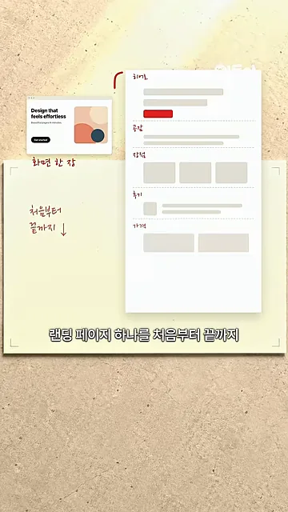
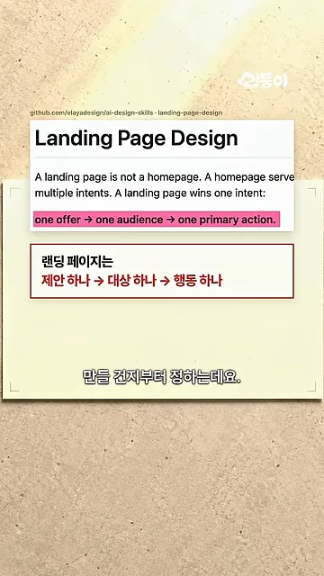
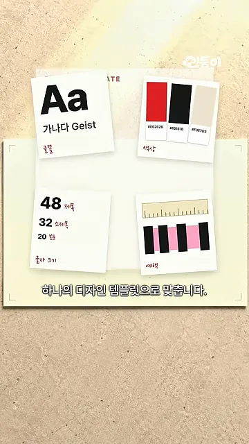
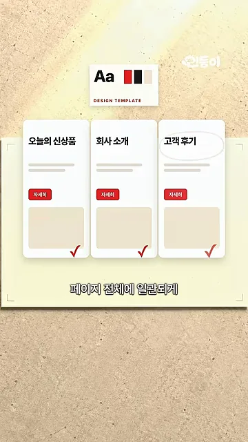
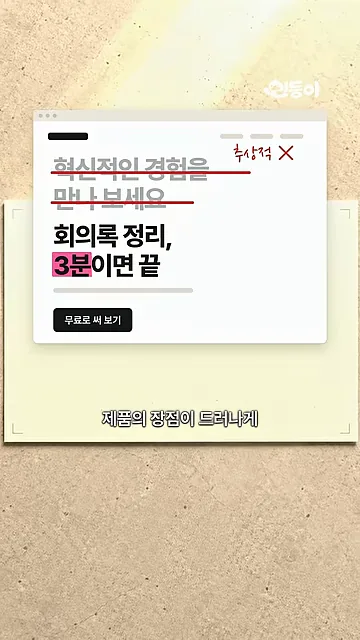
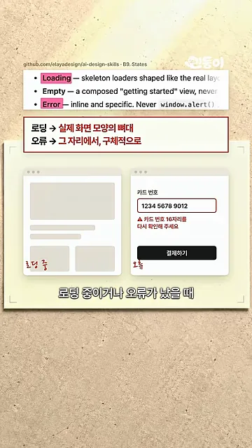
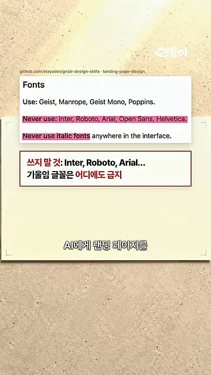
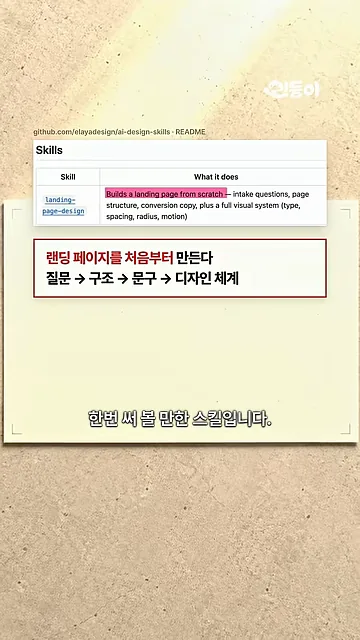

깃허브 트렌딩 1위에 오른 디자인 스킬
영상이 소개하는 건 깃허브 저장소 elayadesign/ai-design-skills예요. 화면 위쪽 배지에는 전체 별 9,856개, 포크 694개, 그리고 분홍색으로 '1,395 stars today'가 찍혀 있어요. 가운데 큰 숫자는 +1,343이에요. 말로는 "하루에만 별이 1400개 가까이"라고 하니, 하루에 1,300~1,400개쯤 받았다고 보면 돼요.

AI(Artificial Intelligence) 디자인 스킬은 이미 많아요. 영상이 꼽는 차이는 범위예요. 왼쪽 작은 카드에는 '화면 한 장'이라는 손글씨가, 오른쪽 긴 종이에는 '처음부터 끝까지'라는 메모와 함께 히어로·문제·장점·후기·가격 칸이 위에서 아래로 이어져 있어요. 이 스킬은 오른쪽처럼 랜딩 페이지 하나를 통째로 설계해요.

디자인보다 질문이 먼저예요
"제품 소개 페이지 만들어 줘"라고 하면 스킬은 화면부터 그리지 않아요. 먼저 세 가지를 정해요.
- 누구에게 보여 줄지 — 영상의 예시는 '회의가 많은 팀장'이에요.
- 어떤 장점을 앞세울지
- 방문자가 어떤 행동을 하게 만들지
아래 화면은 스킬 문서의 첫머리예요. 분홍색으로 칠한 줄이 'one offer → one audience → one primary action'이고, 그 아래 빨간 상자가 우리말로 '제안 하나 → 대상 하나 → 행동 하나'라고 풀어 줘요. 바로 위 문장은 홈페이지는 여러 목적을 담지만 랜딩 페이지는 목적 하나만 이긴다고 말해요.

이 답을 바탕으로 페이지 전체 구성을 잡아요. 어떤 칸을 어떤 순서로 둘지가 여기서 정해져요.
디자인·문구·상태 화면까지 규칙으로 묶어요
디자인 템플릿 하나로 맞춰요
구성이 잡히면 시각 규칙을 정해요. 화면의 네 장짜리 메모가 그 내용이에요. 왼쪽 위는 글꼴(Geist), 오른쪽 위는 색상 세 개(빨강·검정·베이지), 왼쪽 아래는 글자 크기(제목 48, 소제목 32, 본문 20), 오른쪽 아래는 여백이에요.

왜 묶어 둘까요? AI는 화면을 하나씩 만들 때마다 스타일을 새로 고르기 쉬워요. 영상은 이걸 카드 세 장으로 보여 줘요. 처음에는 '오늘의 신상품', '회사 소개', '고객 후기' 카드의 버튼 색과 이미지 색이 제각각이에요. 템플릿을 적용한 뒤에는 세 카드 모두 같은 빨간 버튼과 같은 베이지 이미지 칸을 쓰고, 아래에 체크 표시가 붙어요.

문구와 로딩·오류 화면까지 챙겨요
문구도 규칙을 따라요. 화면에서 '혁신적인 경험을 만나 보세요'에는 빨간 줄이 그어지고 '추상적 ×'라는 메모가 붙었어요. 대신 들어간 문장은 '회의록 정리, 3분이면 끝'이에요. 무엇이 얼마나 빨라지는지가 문장 안에 들어 있어요.

평소에는 잘 안 챙기는 화면도 다뤄요. 위쪽은 스킬 문서의 States 항목이고, 빨간 상자가 '로딩 → 실제 화면 모양의 뼈대', '오류 → 그 자리에서, 구체적으로'라고 풀어 줘요. 아래 왼쪽은 회색 블록으로 된 로딩 화면, 오른쪽은 카드 번호 입력칸 바로 밑에 '카드 번호 16자리를 다시 확인해 주세요'가 뜬 오류 화면이에요.

엄격한 규칙은 장점이자 한계예요
영상은 규칙이 엄격해서 모든 사이트에 어울리지는 않는다고 짚어요. 글꼴 규칙이 좋은 예예요. Geist, Manrope, Geist Mono, Poppins만 쓰고, Inter·Roboto·Arial·Open Sans·Helvetica는 쓰지 말라고 정해 뒀어요. 기울임 글꼴은 어디에도 못 써요. 이미 다른 글꼴을 쓰는 브랜드라면 부딪힐 수 있어요.

마지막 화면은 저장소 README의 스킬 표예요. 지금 들어 있는 스킬은 landing-page-design 하나이고, 설명 첫머리 'Builds a landing page from scratch'가 강조돼 있어요. 아래 빨간 상자가 흐름을 '질문 → 구조 → 문구 → 디자인 체계'로 정리해요. 영상은 Claude Code나 Codex에서도 쓸 수 있다며 끝나요.

영상에 나온 규칙을 한 표로 모으면 이래요.
| 영역 | 규칙 | 영상 속 예시 |
|---|---|---|
| 시각 규칙 | 글꼴·색상·글자 크기·여백을 한 벌로 정해 모든 화면에 적용 | Geist, 빨강·검정·베이지, 48·32·20 |
| 글꼴 | 정해진 글꼴만 쓰고 기울임 글꼴은 금지 | Inter·Roboto·Arial 금지 |
| 문구 | 추상적인 표현 대신 장점이 보이는 문장 | '회의록 정리, 3분이면 끝' |
| 로딩 화면 | 실제 화면 모양을 본뜬 뼈대 | 회색 블록 화면 |
| 오류 화면 | 문제가 생긴 자리에서 구체적으로 | '카드 번호 16자리를 다시 확인해 주세요' |